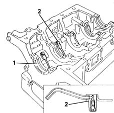
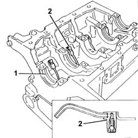
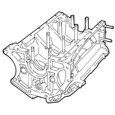
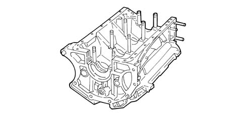
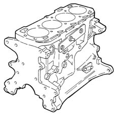
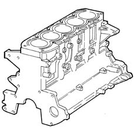
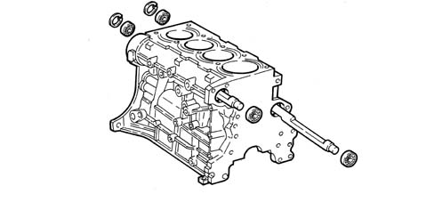
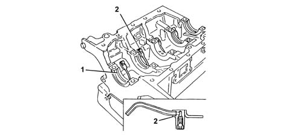
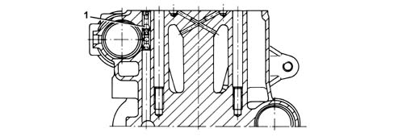
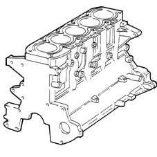

1012A crank case and components
- Path
- Descriptions > 10 ENGINE > 1012 ENGINE CRANKCASE > 1012A crank case and components
- Kind
- system description
- Applies to
- all engines; all production periods
- Interactive page
- https://sloeber94.github.io/elrnDB-a156/en/#/3232814
Applies to: engines: 1.6 TS , 1.8 TS; all production periods
The engine block is cast iron, with high mechanical strength.
The crankshaft is supported by means of five main bearings (1).
The cylinders are formed directly in the engine block, and are graded into three sizes plus one oversize.
There are special channels in the engine block walls which allow the flow of coolant and lubricating oil.
At the bottom of each cylinder, there is a jet (2) from which oil is sprayed onto the piston crown.

Applies to: all engines; all production periods
The engine block is cast iron, with high mechanical strength.
The crankshaft is supported by means of five main bearings (1).
The cylinders are formed directly in the engine block, and are graded into three sizes plus one oversize.
The engine block also houses the two counter-rotating shafts, which are supported by a central bush and a ball bearing at the front and rear.
There are special channels in the engine block walls which allow the flow of coolant and lubricating oil.
At the bottom of each cylinder, there is a jet (2) from which oil is sprayed onto the piston crown.

Applies to: engines: 2.5 V6; all production periods
The light aluminium and silicon alloy cylinder block/crankcase has good mechanical resistance and thermal conductivity properties.
The crankshaft is supported by means of four main bearings.
There are special channels in the engine block walls which allow the flow of coolant and lubricating oil.
There are jets at the base of the cylinders which spray oil to cool the pistons.

Applies to: engines: 3.2 V6; all production periods
CONSTRUCTION FEATURES
The light aluminium and silicon alloy cylinder block/crankcase has good mechanical resistance and thermal conductivity properties.
The crankshaft is supported by means of four main bearings.
There are special channels in the engine block walls which allow the flow of coolant and lubricating oil.

Applies to: engines: 1.9 JTD 8v ; all production periods
The cylinder block is made from spheroidal graphite cast iron with closed-deck type integral cylinder liners.
The crankshaft is supported by five main bearings.
There are special channels in the engine block walls which allow the flow of coolant and lubricating oil.
There is a jet in the lower section which sprays oil to cool the piston skirt and lubricate the gudgeon pin.

Applies to: engines: 2.4 JTD 10v; all production periods
The cylinder block is made from spheroidal graphite cast iron with closed-deck type integral cylinder liners.
The crankshaft is supported by means of seven main bearings.
The cylinder block/crankcase houses a counter-balance shaft which is supported by means of a central bush and a ball bearing at the front and rear.
There are special channels in the engine block walls which allow the flow of coolant and lubricating oil.
There is a jet in the lower section which sprays oil to cool the piston skirt and lubricate the gudgeon pin.

Applies to: engines: 2.0 JTS, 2.0 JTS; all production periods
CONSTRUCTION FEATURES
The engine block is cast iron, with high mechanical strength.
The crankshaft is supported by means of five main bearings (1).
The cylinders are formed directly in the engine block, and are graded into three sizes plus one oversize.
The engine block also houses the two counter-rotating shafts, which are supported by a central bush and a ball bearing at the front and rear.

There are special channels in the engine block walls which allow the flow of coolant and lubricating oil.
At the bottom of each cylinder, there is a jet (2) from which oil is sprayed onto the piston crown.

A cut-off valve (1) fitted inside the vertical channel carrying oil to the cylinder head prevents the system emptying when the engine is off.

Applies to: engines: 2.4 JTD 20v; all production periods
COMPONENT DESCRIPTION
Engine block
Specifications
Operation
This is the main structural part of the engine.
It is designed to house and support all the crankshaft components.
Type
The cylinder block/crankcase is made from cast iron with closed-deck type cylinder liners/bores.
The crankshaft is supported by means of seven main bearings.
There are special channels in the engine block walls which allow the flow of coolant and lubricating oil.
